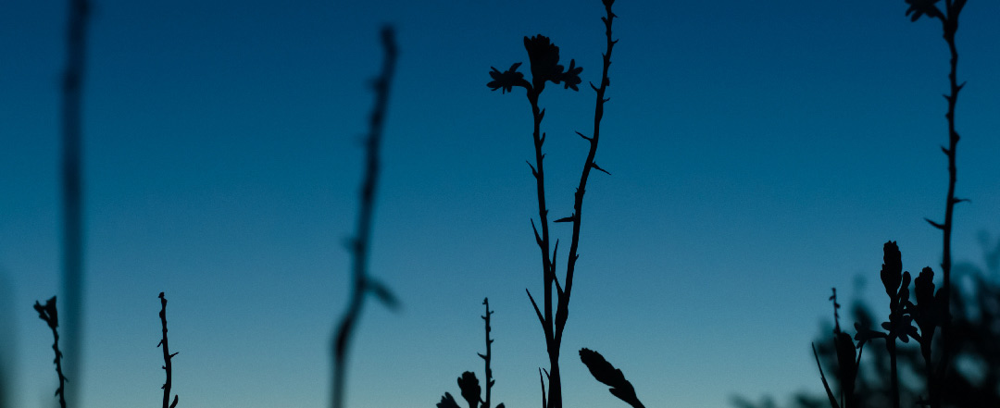
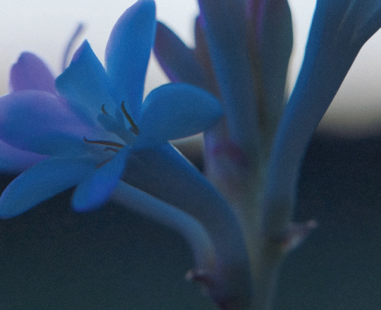
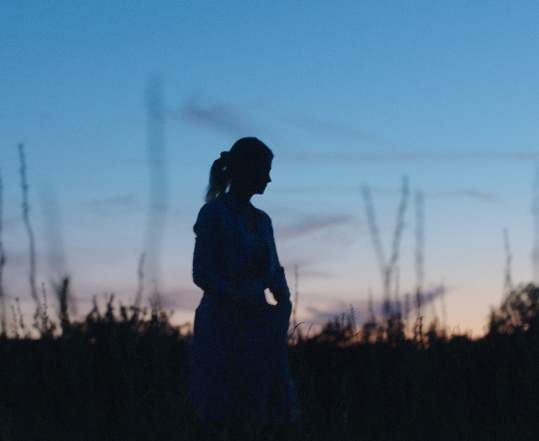

{{DK: I tusmørke||FI: Hämärän aikaan}}
{{DK: De sidste solstråler forsvinder over markerne i Grasse. Tusmørke er en magisk time og det perfekte tidspunkt til at høste Grasse tuberose, der spreder al parfumens kraft i den nye J'adore eau de parfum Infinissime.||FI: Viimeiset auringonsäteet katoavat Grassen peltojen taakse. Ilta- tai aamuhämärä on taianomainen ja täydellinen aika kerätä Grassen tuberoosaa, jonka lumoavan voimakas tuoksu tulee esiin J’adore Eau de Parfum Infinissime-tuoksussa.}}